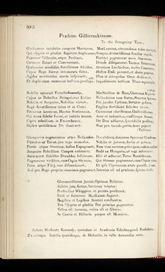

Prælium Gillicrankianum
Battle of Killiecrankie: 27th July 1689
Latin Version
from "Scots Musical Museum" Vol 2 Page 105and Hogg's "Jacobite Reliques" Part I, N°18
Tune
One of the tunes sung to "Tranentmuir"(here "Planxty Davis")
Sheet music - Partition


|
1. Grahamius notabilis coegerat Montanos,
Qui clypeis et gladiis fugarunt Anglicanos; Fugerant Vallicolæ, atque Puritani, Cacavere Batavi et Cameroniani. Grahamius mirabilis, fortissimus Alcides, Cujus Regi fuerat intemerate fides, Agiles monticolas marte inspiravit, Et duplicatum numerum hostium profligavit.' 2. Nobilis apparuit Fermilodunensis, Cujus in rebelles stringebatur ensis ; Nobilis et sanguine, nobilior virtute, Regi devotissimus intus et in cute: Pitcurius heroicus, Hector Scoticanus, Cui mens fidelis fuerat, et invicta manus, Capita rebellium, is excerebravit, Hostes unitissimos ille dimicavit. 3. Glengarius magnanimus atque bellicosus, Functus ut Eneas, pro rege animosus, Fortis atque strenuus, hostes expugnavit, Sanguine rebellium campos coloravit; Surrexerat fideliter Donaldus Insulanus, Pugnaverat viriliter, cum copiis Skyanis, Pater atque filii, non dissimularunt, Sed pro rege proprio, unanimes pugnarunt. 4. Macleanius, circumdatus tribo martiali, Semper, devinctissimus familiae regali, Fortiter pugnaverat more Atavorum, Deinde dissipaverat turmas Batavorum, Strenuus Lochielius, multo Camerone, Hostes ense peremit, et abrio pugione, Istos et intrepidos Orco dedicavit, Impedimento hostium Blaro reportavit. 5. Macneillius de Bara, Glencous Kepochanus, Ballechinus, cum fratre Stewartus Apianus, Pro Jacobo Septimo, fortiter gessere, Pugiles fortissimi feliciter vicere. Canonicus clarissimus, Gallovidianus, Acer et indomitus, consilioque sanus, Ibi dux adfuerat, spectabilis persona, Nam pro tuenda patria, hunc peperit Bellona . 6. Ducalidoni domiuum spreverat gradivus, Nobilis et juvenis, fortis et activus, Nam cum nativum, principem, exulem, audiret, Redit ex Hungaria, ut regi inserviret; Illic et adfuerat, tutor Ranaldorum, Qui strenue pugnaverat cum copiis virorum, Et ipse Capetaneus, cetate puerili, Intentus est ad praelium, spiritu virili. 7. Glenmoristonus junior, optimus bellator, Subito jam factus, hactenus venator; Perduelles Whiggeos, ut pecora prostravit, Ense et fulmineo Mackaium fugavit. Regibus et legibus Scotici constantes, Vos clypeis et gladiis pro principe pugnantes; Vcstra est victoria, vestra est et gloria : In cantis et historia perpes est memoria. |
1. Par Graham, chef fameux, les Highlanders sont menés,
Dont les boucliers, les sabres ont fait fuir les Anglais, Les gens des Basses Terres, et tous les Puritains; Semé l'effroi chez les Bataves, les Caméroniens. Graham, guerrier admirable, au courage sans égal, Fidèle au roi, il anima tous ses fiers Montagnards D'une telle ardeur guerrière qu'il dispersa Ces Whigs, deux fois supérieurs en nombre. 2. Le comte de Dunfermline est alors apparu. Il a dégainé sa lame contre les ennemis. Par l'audace aussi noble qu'il est noble par le sang. En lui le roi possède son plus ardent partisan. Puis Pitcur, l'héroïque, l'Hector de la Calédonie, Dont l'esprit reste fidèle, et la main invaincue. Que de factions rebelles on le voit disperser! Combien de têtes il décervelle! 3. Glengarry, magnanime, autant qu'il est belliqueux, Fut comme un Enée sublime pour le roi courageux. Aussi zélé que brave à la chasse aux ennemis, Du sang de plus d'un rebelle nos champs il a rougis. Et Sir Donald des Isles fidèlement s'est levé. Ses troupes venues de Skye ont vaillamment ferraillé. Le père et ses fils, ne se dérobèrent pas: Le roi, c'est ensemble qu'ils défendent. 4. McLean, entouré de son clan prêt au combat, Toujours le plus fervent à servir la race du roi, S'est battu comme un brave, comme l'ont fait ses aïeux. Il a chassé des Bataves les groupes séditieux. Le diligent Lochiel avec ses nombreux Cameron Détruit les adversaires par le poignard, l'espadon. Ils descendent au Styx: leur vertu n'y fait rien, A Blair on emporte leurs bagages. 5. Puis McNeil de Bara, et Glencoe, et Keppoch, Balchin et son cousin Stewart d'Appin viennent encor Grossir les rangs des braves défenseurs du seul vrai roi, Guerriers courageux dont la victoire guide les pas. Et le très célèbre colonel Cannon de Galloway, Homme d'excellent conseil, passionné, indompté, Et c'est pour notre chef, un remarquable adjoint Que pour son bien enfanta Bellone. 6. Lord Dunkeld que Mars un temps avait éloigné, Un généreux jeune homme courageux et toujours prêt Ayant appris la naissance d'un prince, en exil Revint de Hongrie vers son roi, jaloux de le servir. Et l'on vit également le Protecteur de Clanranald Donner à ses fiers compagnons du combat le signal Et le Capitaine un adolescent encore Combattre avec le sérieux d'un homme. 7. Le jeune Glenmoriston, a su se révéler Un vrai guerrier, lui qui n'avait jamais fait que chasser En dispersant les Whigs, comme il eût fait de brebis Devant nos glaives et sous notre feu McKay s'est enfui. O, Ecossais fidèles à vos lois, et à votre roi. Pour votre prince vous avez endossé le harnois. La victoire fut votre; ainsi sera la gloire, Par nos chants, d'éternelle mémoire. (Trad. Ch.Souchon(c)2006) |
|
It is most unusual to find a Latin Scottish folksong and unfortunately neither Burns nor his commentator friends left any notes on this piece. There is no indication as to the origin or purpose of the song, and there is no obvious reason for its inclusion. It is about the Battle of Killicrankie and is played to the tune 'Tranent Muir', which also goes by the title 'Gillicrankie' or 'The Battle of Killicrankie'.
Hogg includes the following note in his "Jacobite Relics": "This curious Latin rhyme is said to have been composed by a Professor Kennedy of Aberdeen . It answers well as a series of notes to the other ballad ; for every man of note that was in the battle is mentioned with some eulogium. " Canonicus clarissimus Gallovidianus," &c. by many readers supposed to mean some great Galloway priest who had made a figure in the battle, refers to Colonel Cannon, who waa a native of that country, and who came over at the head of the Irish troops sent by James to the assistance of Clavers; and as he makes some figure in the Jacobite annals of that period, it will be necessary, for the sake of connexion, to trace his short and disastrous career." Follows a long account of Cannon's career. An English translation of this song by Sir Walter Scott exists. I shall include it if ever I find it. |
Il est extrêmement rare de trouver des chants écossais en latin et malheureusement ni Burns ni ses collaborateurs n'ont laissé de notes à propos de ce morceau. Ils n'indiquent ni l'origine ni le propos de ce chant, ni la raison pour laquelle il figure dans le recueil. Bien qu'il s'agisse de la bataille de Killiecrankie, il est dit qu'on le chante sur l'air de "Tranent Muir", lequel est aussi connu sous le titre de "Gillicrankie" ou de "La Bataille de Killiecrankie".
On trouve la note suivante dans les "Reliques Jacobites" de Hogg: "Ce curieux poème latin est attribué à un certain Professeur Kennedy d'Aberdeen . Il peut remplacer une série de notes explicatives pour les autres ballades "Killicrankie". Chaque personnage connu qui prit part à la bataille y est gratifié d'un éloge. Le "canonicus clarissimus Gallovidianus etc." dont on a dit souvent que c'était quelque célèbre prêtre du Galloway qui se serait illustré pendant la bataille, est en réalité le colonel Cannon, natif de ce district et qui vint, à la tête de troupes irlandaises, envoyé par Jacques à la rescousse de Clavers et qui apparut dans les annales Jacobites du moment. Il est nécessaire pour la compréhension des autres pièces de retracer sa courte et désastreuse carrière." Vient alors une longue description de ladite carrière. Une traduction anglaise de ce poème a été faite par Walter Scott. Je l'ajouterai si je la trouve. |
Defeat of the Jacobites at Dunkelk on 21st August 1689
|
Battle of DUNKELD 21 August 1689
Immediately after Dundee's death at the Battle of Killiecrankie the Highlanders were led on by Colonel Cannon, known as his "inept successor." The Jacobite army tried to attack Dunkeld, which was held by a single regiment, the newly-mustered Cameronians , 1200 men strong, (who had absolutely no connection to the Clan Cameron). The Jacobites made their way into the streets and the Cameronians had to take refuge in the cathedral and the nearby mansion-house. The Jacobites kept up a constant fire upon the enemy. But the Cameronians, when their musket-balls were exhausted, tore the lead from the roof of the cathedral and, with burning branches at the end of their pikes, rushed out on the houses where the Jacobites were concealed, setting fire to them and locking the doors. Many Highlanders perished. In one house as many as sixteen perished, and after a fight that had lasted for approximately four hours the Jacobite Highlander survivors made off across the neighbouring hills. The Cameronians were commanded by the young Lieutenant-Colonel William Cleland. |
Bataille de DUNKELD 21 août 1689
Après la mort de Dundee à la bataille de Killiecrankie, c'est le Colonel Cannon, qui fut son'"inepte" successeur. Les Jacobites tentèrent d'attaquer Dunkeld qui n'était défendue que par un seul régiment, nouvellement constitué, les Cameroniens , qui comptaient 1200 hommes (sans aucun rapport avec le Clan Cameron). Les Jacobites pénétrèrent dans les rues tandis que les Cameroniens étaient contraints de trouver refuge dans la cathédrale et le presbytère attenant. Les Jacobites ne cessèrent de faire feu sur l'ennemi. Mais les Cameroniens, quand les balles de mousquets furent épuisées, arrachèrent le plomb du toit de la cathédrale, puis avec des branches enflammées au bout de leurs piques, se jetèrent sur les maisons où les Jacobites s'étaient cachés et y mirent le feu après avoir barricadé les portes. De nombreux Highlanders périrent - pas moins de seize dans une certaine maison- et, après une bataille qui dura environ 4 heures les survivants Jacobites s'enfuirent vers les collines voisines. Les Cameroniens étaient commandés par le jeune Lieutenant-Colonel William Cleland. |